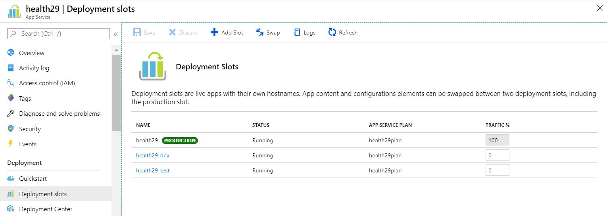

1.1. Azure App service: Health29¶
As already mentioned, Health29 is implemented as an Azure App Service divided into slots.
First we have to create an Azure App service to locate our webapp, and then we will make the division into slots to create and configure the different environments.
In particular, for the Health29 platform we have created a Web application type App service: health29
The steps to follow would be:
Enter the Azure portal with the account you have active, go to the option “All services”, look for the section “Web and mobile”, select the service “App Service”. We will see a list of services in case you have done any previously, otherwise we have an empty panel, click on the option “Add” and Azure shows us a catalog of all services available for web and mobile.
Select the web application without SQL as a database.
We have a small summary of the functions of the service, the options for implementation with other technologies from Microsoft and third parties, we click on “Create”.
It is necessary to add a name to the service that is unique, because we are using a shared service (.azurewebsites.net) We can select the operating system of the server, filling in the fields we select “Create”.
Once we have the App service created, we proceed to divide it to configure the different work environments. For this, as we have already said, we are going to use the slots:
Deployment slots let you deploy different versions of your web app to different URLs. You can test a certain version and then swap content and configuration between slots.
In general,
Each deployment slot is like a full-fledged App Service instance.
The original App Service deployment slot is also called the production slot.
Deployment slots can copy the configuration (AppSettings and Connectionstrings) of the original App Service or other deployment slots.
When you scale a deployment slot (up or out), you also scale all the other slots of the App Service. This is because all slots share the same App Service Plan.
Because all deployments lots run within the same App Service and its App Service Plan, deployment slots are free to use if you are using the Standard pricing tier or higher.
If you have installed any site extensions, you need to do that again in a deployment slot, as it is a new App Service instance.
Deployment slots have a different URL than the original App Service. This URL is based on the name you give the deployment slot.
The slots that have been created and configured in Health29 are:
Each of these slots will correspond to a platform environment, with the aim of achieving an orderly workflow between teams:
Developers or programmers will be able to work on environment to incorporate the new functionalities or correct errors without this directly affecting the users.
There will be a pre-production environment to be able to validate the tasks performed or even make demos to clients to collect feedback and establish future lines on which to work.
Finally, this will ensure that the production environment or the one used by customers/users is stable.
The steps to follow to create and configure slots are summarized in the official Microsoft document.It is a simple task, just select in the App Service “Deployment slots” and click on add a new one. It opens the Add Slot dialog, to the right of the screen where you need to enter a name, and choose if you want to copy the configuration from another slot, or not at all. Choosing to copy the configuration is important because your the application does things like connect to the databases and has specific connection strings in these settings.
In addition, the following domains have been configured as indicated in the following link: